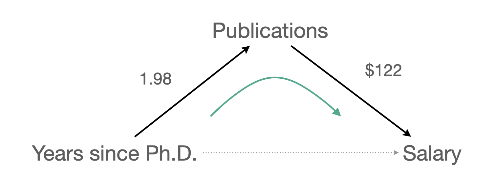

acad0 <- read_csv("data/c0301dt.csv")Multiple Regression
Applied Multiple Regression/Correlation Analysis for the Behavioral Sciences by Jacob Cohen, Patricia Cohen, Stephen G. West, Leona S. Aiken
Multiple linear/regression models
- 독립/예측 변수가 2개 이상인 경우
- 예측변수들 각각의 고유한 효과(effect)를 추정(estimate)
- 이는 다른 변수들의 영향이 제거된 해당 변수의 효과는 어떠한가를 의미
앞서 논의된 내용은 두 변수 사이의 관계를 다룸으로써 비교적 단순한 추론 및 두 변수 간에 모종의 관계의 유무(영가설) 정도를 살펴보았음.
3개 이상의 변수 간의 관계에 대해서는 기하급수적으로 복잡한 관계가 나타남으로 인해, 연구자는 영향을 주고 받는 변수들 간의 인과 관계에 대해 충분한 이론적 근거를 갖고, 분석의 목적을 분명히 할 필요가 있음. (탐색적 분석이나 단순한 예측을 위한 것이 아니라면)
인과분석은 유전학자였던 Sewell Wright(1921)가 유전적 효과와 비유전적 효과를 분리하려는 노력하에 개발했던 경로분석 다이어그램(path analytic diagram)에 그 뿌리를 두고 있으며, 후에 구조모형(structural model)으로 불리어 이어져 왔으며, causal analysis라는 분야에서 완성되어가고 있음.
기본적인 인과관계의 프레임워크에서, X가 Y의 원인이기 위해서 다음 4가지 조건을 만족해야 함.
- X는 시간적으로 Y에 선행
- 인과적 효과를 만들어내는 기제(mechanism)를 상정할 수 있음
- X가 변하면 Y도 변화가 발생함 (association or correlation)
- X를 변화시키면 Y가 변한다는 것은 뜻은 아님.
- 성별처럼 변화시킬 수 없는 요인도 있음
- X를 어떻게 manupulate 하느냐에 따라 정상적 기제가 변형되어 다른 효과가 나타날 수 있음.
- 임금을 갑자기 2배 올리면?
- 임금을 줄이면?
- X를 변화시키면 Y가 변한다는 것은 뜻은 아님.
- 다른 요인들 (confounding)을 제거한 후에도 X의 효과가 나타나야 함.
- 임금은 연령이 높을수록 높아지는데 삶의 만족도는 늙음으로부터 오는 정신적 여유에서 발생한 것이라면?
인과관계는 통계적 분석에 의해 증명될 수 있는 것이 아니며,
관찰된 데이터와 상정한 모형이 어느 정도 일치한다라고 말할 수 있는 정도에서 결론지을 수 있으며,
그 모형이 맞다면, 그 효과는 어떠하다고 실증적(empirically)으로 보이는 것임.
모형의 가치는 그 구조적 논리에 크게 좌우됨.
앞서 다뤘던 교수의 연봉에 연차와 성과물이 영향을 미친다는 인과모형을 세우면,
- 연차와 성과물 간에 인과관계는 상정하지 않았음.
- 적어도 연봉이 성과물이나 연차에 영향을 주지는 않는다고 상정했음.

교수의 연봉(salary)이 학위를 받은 후 지난 시간(time since Ph.D.)과 출판물의 수(pubs)에 의해 어떻게 영향을 받는가?
- 같은 연차의 교수들 간에 논문 수에 따라 연봉은 얼마나 차이가 나는가?
- 동일한 개수의 논문을 발표한 교수들 간에 연차에 따라 연봉은 얼마나 차이가 나는가?
앞서 연봉에 대한 예측모형을 다음과 같이 얻었는데,
- Model 1: \(\widehat{salary} = \$1,224\:time + \$43,659\)
- Model 2 : \(\widehat{salary} = \$336\:pubs + \$46,357\)
다음과 같이 연차가 늘면 논문의 수도 따라서 늘어나는 경향이 있기 때문에, 연차 또는 논문 수의 고유한 효과를 추정하기 어려움.
- \(\widehat{pubs} = 1.98\:time + 4.73\)
mod1 <- lm(salary ~ time, data = acad0)
mod2 <- lm(salary ~ pubs, data = acad0)두 개의 예측변수를 모두 포함한 모형
Model 3: \(\widehat{Y} = a_1 X_1 + a_2 X_2 + a_0 ~ (z=2x-y+1)\)
\(\widehat{salary} = \$983\:time + \$122\:pubs + \$43,082\)
mod3 <- lm(salary ~ time + pubs, data = acad0)
summ(mod3) |> print() # library(jtools)MODEL INFO:
Observations: 15
Dependent Variable: salary
Type: OLS linear regression
MODEL FIT:
F(2,12) = 6.78, p = 0.01
R² = 0.53
Adj. R² = 0.45
Standard errors: OLS
------------------------------------------------------
Est. S.E. t val. p
----------------- ---------- --------- -------- ------
(Intercept) 43082.39 3099.49 13.90 0.00
time 982.87 452.06 2.17 0.05
pubs 121.80 149.70 0.81 0.43
------------------------------------------------------The regression plane: x값이 고정될 때, 혹은 y값이 고정될 때, 동일한 기울기의 직선으로 나타남.

3d plot
- 교수들의 연차와 그들이 쓴 논문 수는 깊이 연관되어 있으며 (r = 0.66), 두 변수의 redunancy가 각 변수들의 효과를 변화시킴.
- 두 예측 변수의 산술적 합으로 연봉을 예측하므로 각 예측변수의 효과는 수정될 수 밖에 없음.
- 수학적으로 보면, 각 예측변수의 기울기는 다른 예측변수의 값에 상관없이 일정하므로, 다른 예측변수들을 (임의의 값에) 고정시키는 효과를 가짐
- 즉, 다른 변수와는 독립적인, 고유한 효과를 추정하게 됨
세 모형을 비교하면,
Model 1: \(\widehat{salary} = \$1,224\:time + \$43,659\)
Model 2 : \(\widehat{salary} = \$336\:pubs + \$46,357\)
Model 3: \(\widehat{salary} = \$983\:time + \$122\:pubs + \$43,082\)
- 연차(
time)의 효과는 $1,224에서 $984로 낮아졌고, - 논문수(
pubs)의 효과는 $336에서 $122로 낮아졌음.
각 회귀계수를 partial regression coefficient (부분 회귀 계수) 라고 부름.
부분 회귀 계수의 첫번째 해석:
- 만약 논문 수가 일정할 때, 예를 들어 10편의 논문을 쓴 경우만 봤을 때, 연차가 1년 늘 때마다 연봉은 $984 증가함; 평면의 선형모형을 가정했기에 이 관계는 논문 수에 상관없음.
- 연차가 일정할 때, 예를 들어 연차가 12년차인 경우만 봤을 때, 논문이 1편 늘 때마다 연봉은 $336 증가함; 평면의 선형모형을 가정했기에 이 관계는 연차에 상관없음.
이는 다른 변수를 고려 (통제, controlling for) 했을 때 혹은 다른 변수의 효과를 제거 (partial out) 했을 때, 각 변수의 고유한 효과를 의미함; holding constant, controlling for, partialing out, adjusted for, residualizing
뒤집어 말하면, 연차만 고려했을때 연차가 1년 늘면 $1,224 연봉이 증가하는 효과는 연차가 늘 때 함께 늘어나는 논문 수의 효과가 함께 섞여 나온 효과라고 말할 수 있음.
이는 인과관계에 있는 변수들의 진정한 효과를 찾는 것이 얼마나 어려운지를 보여줌
The partial regression coefficients, $983 and $122, are the empirical estimates, respectively, of h and g, the causal effects of our independent variables accompanying the arrows in the causal diagram (Fig. 3.1.1) (p. 69).
부분 회귀 계수에 대한 두번째 해석
- 다른 변수들이 partial out 된 후의 효과.
- 실제로 $122는 연차로 (선형적으로) 예측되지 않는 논문수(residuals)로 [연차로 예측되지 않는] 연봉을 예측할 때의 기울기
논문 수(\(X_2\))에 대한 부분 회귀 계수에 대해 자세히 들여다 보면,

\(\widehat{Y_1}: X_1\) 으로만 \(Y\)를 예측했을 때의 예측치, \(\widehat{Y}_{12}: X_1\)과 \(X_2\) 로 함께 \(Y\)를 예측했을 때의 예측치
\(\widehat{X}_{2.1}\): \(X_1\) 으로 \(X_2\) 를 예측했을 때의 예측치; 연차로 예측된 논문수
\(X_2 - \widehat{X}_{2.1}\): \(X_1\)으로 \(X_2\)를 예측했을 때의 예측하지 못한 잔차: 연차로 예측되지 않는 논문수
\(Y-\widehat{Y}_1\): \(X_1\)으로 예측되지 않는 \(Y\) : 연차로 예측되지 않는 연봉
논문 수(\(X_2\))에 대한 부분 회귀 계수: [연차로 예측되지 않는 논문 수]와 [연차로 예측되지 않는 연봉] 간의 선형관계에 대한 계수
\(\widehat{salary} = \$983\:time + \$122\:pubs + \$43,082\)
- \(\widehat{salary} = \$1,224\:time + \$43,659\)
- \(\widehat{pubs} = 1.98\:time + 4.73\)
Added-variable plots
aka partial regression plots
library(car)
avPlots(mod3) # partial regression plotMarginal vs. Conditional Plots
Measures of Association
\(R\): Multiple correlation coefficient
- \(Y\) 와 \(\widehat Y\) 의 correlation 즉, Y와 회귀모형이 예측한 값의 (선형적) 상관 관계의 정도; 회귀모형의 예측의 정확성
- 다시말하면, 예측변수들의 최적의 선형 조합과 Y의 상관 관계의 정도.
\(R^2\): (평면의) 선형모형에 의해 설명된 Y 변량의 비율:
또는 예측변수들의 최적의 선형 조합에 의해 설명된 Y 변량의 비율.
즉, \(\displaystyle\frac{V(\widehat{Y})}{V(Y)}\) 또는 \(\displaystyle 1 - \frac{V(e)}{V(Y)}\)
Partial Associations
- Partial correlation (pr)
- Semi-partial correlation (sr)
\(pr^2\) : “연차로 설명되지 않는 연봉”의 변량 중 “연차로 설명되지 않는 논문수”의 변량으로 설명되는 비율
즉, 연차를 연봉과 논문수에서 모두 partial out 시켰을 때 남은(residualized) 연봉의 변량과 논문수의 변량의 중복 정도.
\(sr^2\) : 연봉의 변량 중 “연차로 설명되지 않는 논문수”의 변량으로 설명되는 비율
즉, 연차를 논문수에서만 partial out 시켰을 때 남은(residualized) 논문수의 변량과 연봉의 변량의 중복 정도.
summ(mod3, part.corr = TRUE, model.info = FALSE, model.fit = FALSE) |> print()Standard errors: OLS
---------------------------------------------------------------------------
Est. S.E. t val. p partial.r part.r
----------------- ---------- --------- -------- ------ ----------- --------
(Intercept) 43082.39 3099.49 13.90 0.00
time 982.87 452.06 2.17 0.05 0.53 0.43
pubs 121.80 149.70 0.81 0.43 0.23 0.16
---------------------------------------------------------------------------
Correlations tables
library(psych)
partial.r(acad0, c("salary", "time"), "pubs")
# partial correlations
# salary time
# salary 1.00 0.53
# time 0.53 1.00
partial.r(acad0, c("salary", "pubs"), "time")
# partial correlations
# salary pubs
# salary 1.00 0.23
# pubs 0.23 1.00
cor2(acad0[c("time", "pubs")], acad0["salary"])
# salary
# time 0.71
# pubs 0.59Correlations with salary
| \(r\) (simple) | \(pr\) (partial) | \(sr\) (semi-partial) | |
|---|---|---|---|
| time | 0.71 | 0.53 | 0.43 |
| pubs | 0.59 | 0.23 | 0.16 |
| \(r^2\) | \(pr^2\) | \(sr^2\) | |
|---|---|---|---|
| time | 0.50 | 0.28 | 0.18 |
| pubs | 0.35 | 0.05 | 0.03 |
Summarizing the results for the running example, we found \(sr^2\) = .1850, \(pr^2\) = .2826 and \(sr^2\) = .0258, \(pr^2\) = .0522. Whichever base we use, it is clear that number of publications (\(X_2\)) has virtually no unique relationship to salary, that is, no relationship beyond what can be accounted for by time since doctorate (\(X_1\)). On the other hand, time since doctorate (\(X_1\)) is uniquely related to salary (\(sr_1\)) and to salary holding publications constant (\(pr_1\)) to a quite substantial degree. (p.75)
회귀계수의 상대적 중요성
참고: Chapter 8. Assessing the Importance of Regressors,
in Regression Analysis and Linear Models by Richard B. Darlington & Andrew F. Hayes
모든 상황에 적용할 수 있는 하나의 방법은 없으며,
연구 내용과 측정 변수들의 특성에 따라 적절한 방법을 선택. (여전히 논쟁 중이며, 연구 중)
- 표준화 회귀계수 (standardized regression coefficient)
- Semi-partial correlation coefficient (sr) **
- Semi-partial correlation squared (\(sr^2\)) (by David C. Howell)
- Dominance analysis
표준화 회귀계수 (\(\beta\))
Standardized regression coefficient
- 표준화하여 각 변수들의 단위가 1sd로 같아져 계수들 간에 비교가 용이하나
- 표준화에 (심각하게) 반대하는 의견도 있음.
- 현 표본의 특성을 반영하여, 샘플들마다 계수값이 크게 달라질 수 있음. (특히, 변수들간의 상관이 큰 경우)
- 표준화가 무의미한 변수들도 존재하며; ex. 성별
- 인과적 의미를 지니려면 원 단위로 표현하는 것이 더 적절함. (1sd 만큼 늘어났다는 것이 의미가 있을까?)
- Simple regression의 경우, \(\beta = r\) 즉, 표준화 회귀계수는 상관계수와 같음.
- \(b = r\), (\(b=r \frac{sd_Y}{sd_X}\))
- \(b_i = \beta_i \frac{sd_Y}{sd_i}\)
R에서 표준화 계수를 구하는 방식: scale(), summ()
scale()함수로 각 변수들을 직접 표준화
참고: 표준화 한 후 estimate한 방식 vs. estimate한 후 표준화한 방식
acad0 <- acad0 |>
mutate(
time_std = scale(time),
pubs_std = scale(pubs),
salary_std = scale(salary)
)또는 formula에서 직접 처리
broom::tidy(lm(scale(salary) ~ scale(time) + scale(pubs), data = acad0))# A tibble: 3 × 5
term estimate std.error statistic p.value
<chr> <dbl> <dbl> <dbl> <dbl>
1 (Intercept) 2.37e-16 0.191 1.24e-15 1.00
2 scale(time) 5.70e- 1 0.262 2.17e+ 0 0.0504
3 scale(pubs) 2.13e- 1 0.262 8.14e- 1 0.432 summ()함수의 옵션scale,transform.response을 이용
- 선별적으로 표준화할 변수를 지정할 수 없어서 부적절한 경우 존재
summ(mod3, scale = TRUE, transform.response = TRUE, model.info = FALSE, model.fit = FALSE) |> print()Standard errors: OLS
-----------------------------------------------
Est. S.E. t val. p
----------------- ------ ------ -------- ------
(Intercept) 0.00 0.19 0.00 1.00
time 0.57 0.26 2.17 0.05
pubs 0.21 0.26 0.81 0.43
-----------------------------------------------
Continuous variables are mean-centered and scaled by 1 s.d.mod3에서 연봉에 미치는 연차와 논문수의 상대적 중요성에 대한 지표 비교
| \(\beta\) | \(sr\) | \(sr^2\) | |
|---|---|---|---|
| time | 0.57 | 0.43 | 0.18 |
| pubs | 0.21 | 0.16 | 0.03 |
Model Comparison
- mod1 vs. mod3: nested model
mod1 <- lm(salary ~ time, data = acad0)
mod3 <- lm(salary ~ time + pubs, data = acad0)- 연차로 연봉의 변량을 설명한 모형에 논문 수가 예측변수로 추가되었을 때, 추가로 연봉의 변량을 얼마나 설명하는가?
- \(R^2\)의 증가량을 통해 파악할 수 있음.
- \(\Delta R^2\) = 0.530 - 0.505 = 0.025
- \(sr^2\) 과 동일 (semi-partial squared)
glance(mod1) # library(broom)# A tibble: 1 × 12
r.squared adj.r.squared sigma statistic p.value df logLik AIC BIC
<dbl> <dbl> <dbl> <dbl> <dbl> <dbl> <dbl> <dbl> <dbl>
1 0.505 0.466 5763. 13.2 0.00300 1 -150. 306. 308.
# ℹ 3 more variables: deviance <dbl>, df.residual <int>, nobs <int>glance(mod3)# A tibble: 1 × 12
r.squared adj.r.squared sigma statistic p.value df logLik AIC BIC
<dbl> <dbl> <dbl> <dbl> <dbl> <dbl> <dbl> <dbl> <dbl>
1 0.530 0.452 5839. 6.78 0.0107 2 -150. 307. 310.
# ℹ 3 more variables: deviance <dbl>, df.residual <int>, nobs <int>\(\Delta R^2\) 가 통계적으로 유의한지, 즉 유의하지 증가했는지를 확인
anova(mod1, mod3)# A tibble: 2 × 6
Res.Df RSS Df `Sum of Sq` F `Pr(>F)`
<dbl> <dbl> <dbl> <dbl> <dbl> <dbl>
1 13 431731655. NA NA NA NA
2 12 409159359. 1 22572295. 0.662 0.432
2. mod2 vs. mod3: nested model
mod2 <- lm(salary ~ pubs, data = acad0)
mod3 <- lm(salary ~ time + pubs, data = acad0)- 논문수로 연봉의 변량을 설명한 모형에 연차가 예측변수로 추가되었을 때, 추가로 연봉의 변량을 얼마나 설명하는가?
- \(R^2\)의 증가량을 통해 파악할 수 있음.
- \(\Delta R^2\) = 0.530 - 0.346 = 0.184
- \(sr^2\) 과 동일 (semi-partial squared)
glance(mod2) # library(broom)# A tibble: 1 × 12
r.squared adj.r.squared sigma statistic p.value df logLik AIC BIC
<dbl> <dbl> <dbl> <dbl> <dbl> <dbl> <dbl> <dbl> <dbl>
1 0.346 0.295 6624. 6.86 0.0212 1 -152. 310. 312.
# ℹ 3 more variables: deviance <dbl>, df.residual <int>, nobs <int>glance(mod3)# A tibble: 1 × 12
r.squared adj.r.squared sigma statistic p.value df logLik AIC BIC
<dbl> <dbl> <dbl> <dbl> <dbl> <dbl> <dbl> <dbl> <dbl>
1 0.530 0.452 5839. 6.78 0.0107 2 -150. 307. 310.
# ℹ 3 more variables: deviance <dbl>, df.residual <int>, nobs <int>\(\Delta R^2\) 가 통계적으로 유의한지, 즉 유의하지 증가했는지를 확인
anova(mod2, mod3)# A tibble: 2 × 6
Res.Df RSS Df `Sum of Sq` F `Pr(>F)`
<dbl> <dbl> <dbl> <dbl> <dbl> <dbl>
1 13 570340401. NA NA NA NA
2 12 409159359. 1 161181042. 4.73 0.0504Patterns of Association
Direct and Indirect Effects
만약, 다음과 같은 인과모형을 세운다면,

- 연차가 연봉에 미치는 효과가 두 경로로 나뉘어지고,
- 연차 \(\rightarrow\) 연봉: 직접효과 $983
- 연차 \(\rightarrow\) 논문 \(\rightarrow\) 연봉: 간접효과 1.98 x $122 = $241.56
- 두 효과를 더하면: $983 + $241.56 = $1224.56 = 논문수를 고려하지 않았을 때 연차의 효과
- 즉, 연차가 1년 늘때 연봉이 $1224 증가하는 것은 연차 자체의 효과($983)와 논문의 증가에 따른 효과($241)가 합쳐져 나온 결과라고 말할 수 있음.
- 이 때, 논문의 수가 연차와 연봉의 관계를 (부분) 매개한다고 표현. (mediation)
만약, 연차의 효과 $1224이 논문수를 고려했을 때 줄어든($983) 수준을 훨씬 넘어 통계적으로 유의하지 않을 정도로 0에 가까워진다면, 연차의 효과는 모두 논문의 효과를 거쳐 나타나는 것이라고 말할 수 있음. 이 때, 완전 매개 (fully mediate)한다고 표현함.

매개효과의 통계적 분석 절차는 여러 방식이 제시되고 있으나, 일반적인 절차는 부트스랩핑(bootstraping)을 통해 추정.
library(psych)
mod_med <- mediate(salary ~ time + (pubs), data = acad0)summary(mod_med)Call: mediate(y = salary ~ time + (pubs), data = acad0)
Direct effect estimates (traditional regression) (c') X + M on Y
salary se t df Prob
Intercept 43082.39 3099.49 13.90 12 9.26e-09
time 982.87 452.06 2.17 12 5.04e-02
pubs 121.80 149.70 0.81 12 4.32e-01
R = 0.73 R2 = 0.53 F = 6.78 on 2 and 12 DF p-value: 0.0107
Total effect estimates (c) (X on Y)
salary se t df Prob
Intercept 43658.59 2978.02 14.66 13 1.83e-09
time 1224.39 336.48 3.64 13 3.00e-03
'a' effect estimates (X on M)
pubs se t df Prob
Intercept 4.73 5.59 0.85 13 0.41300
time 1.98 0.63 3.14 13 0.00783
'b' effect estimates (M on Y controlling for X)
salary se t df Prob
pubs 121.8 149.7 0.81 12 0.432
'ab' effect estimates (through all mediators)
salary boot sd lower upper
time 241.53 230.31 277.03 -300.24 778.08Spurious Relationships
사실, 위에서 다룬 데이터(N=15)로만 보자면,
논문수(pubs)와 연봉(salary)의 관계는 spurious한 관계라고 잠정적으로 말할 수 있음.
- 연차(
time)가 “통계적으로 통제” 혹은 “partial out” 되었을 때,
partial correlation \(pr\) = 0.23 이며, 그 제곱 \(pr^2\) = 0.05 - 뿐만 아니라, not significant
연차(time)를 논문수와 연봉의 common cause 라고 말하며, confounding이 되어 논문수와 연봉의 인과관계는 실제로 없을 수 있음을 암시함.
Causal Relations
세 변수 간의 일반적인 인과관계의 형태에 대해서 분류해보면, (p.76, p.458)
흔히 나타나는 partial redundancy인 Model B의 예를 보면,
Moderators (조절변수): interaction effects
ex. 연령(X)에 따라 지구력(Y)이 감소하는 관계가 운동한 기간(Z)에 따라 변화
Case studies
- Leerkes and Crockenberg (1999)의 육아에 대한 효능감 연구
- Guber (1999)의 SAT 점수와 주(states)의 교육지출 사이의 관계
- National Education Longitudinal Study of 1988: 10학년 학생들의 과제와 성적과의 관계
Path Analysis & Latent Variables
연봉에 미치는 영향에 대한 full model (p.461)
- Exogenous and endogenous variables
- \(U_Y\): “\(e_Y\) (for error variance) or \(U_Y\) (for unmeasured causes), representing the miscellaneous unknown or unmeasured(”random”) causes of variables, about which our data, and perhaps our theory as well, are silent”
- \(U_Y\)는 모든 측정된 변수와 독립임을 가정: 그렇지 않으면 인과를 유추하기 어려워짐. 숨은 confounder가 존재할 수 있는 가능성이 존재.
An important set of residual causes of our variables as measured in the behavioral sciences are those collectively referred to as measurement error, and including such things as day to day or moment to moment fluctuation in response probability, unclean test tubes or imperfectly standardized reagents, the impact of temporary illness or fatigue, or that miscellany of item content that is irrelevant to the main thrust of the measures included in the model. (p. 459)
Causal claim를 하기 위해서는 항상 주의해야 하며,
회귀계수가 인과관계를 올바르게 표현하려면, 주요한 confounding이 모형에 포함되어 있어 모형을 심각히 왜곡하는 spurious한 관계들이 제거되어야 함.
- 앞서 다룬 예제에서보면, 논문 한 편의 증가가 연봉을 평균적으로 $336 증가시킨다고 말하는 것은 연차라는 common cause가 존재하지 않을 때에 가능함.
- 실제로 연차를 모형에 포함함으로써 논문의 영향력은 $122로 줄었음.
모든 spurious한 관계를 다 제거할 수 없기는 하나 중요한 confounder을 찾아 모형에 포함시키는 노력이 필요.
적어도 mediator들이 빠진 것은 모형을 심각히 저해하지는 않음.
- 예를 들어 학장과의 정치적 단결, 다른 대학으로부터의 취업 제안을 알리거나, 대학에서의 과거 및 현재 다른 활동들이 연봉에 영향을 미칠 수 있음.
- 하지만, 이는 mediator들이 될 수 있으나 confounder들은 아님.
연구자가 설정한 모형이 데이터와 일치하는가에 대한 모형 적합도 (model fit)를 살펴볼 수 있는데, 다음과 같이
model implied/predicted covariance 과 actual covariance (saturated model)가 얼마나 불일치하는지에 대한 다양한 지표들을 이용해 설정한 모형이 틀린 모형은 아닐 것이라고 추정할 수 있음.
예를 들어, 연구자가 다음 그림의 두번째 모형을 세웠다면,

회귀계수의 비교 (salary 단위: 1000)
salary pubs time
salary 0 0.122 0.983
pubs 0 0.000 1.983
time 0 0.000 0.000 salary pubs time
salary 0 0.336 0.000
pubs 0 0.000 1.983
time 0 0.000 0.000상관계수의 비교
salary pubs time
salary 1.000
pubs 0.588 1.000
time 0.710 0.657 1.000 salary pubs time
salary 1.000
pubs 0.588 1.000
time 0.386 0.657 1.000상관계수의 차이
actual correlation/covariance (saturated model) vs. model implied/predicted correlation/covariance matrix
- raw vs. standardized
salary pubs time
salary 0.000
pubs 0.000 0.000
time 0.324 0.000 0.000 salary pubs time
salary 0.000
pubs 0.000 0.000
time 1.963 0.000 0.000위의 covariance matrix를 이용하여 다양한 지표들이 이용해 모형의 적합도를 추정
- 산술적 차이나 비율등의 차이로 비교 (residual covariance matrix, 잔차 행렬)
- SRMR : 잔차 covariace 값들의 평균 정도를 수량화
- inferential vs. descriptive indices
- \(\chi^2\) : saturated 모형과 설정한 모형이 같다는 가설을 통계적으로 검정
- GFI, NFI 등
- alternatives: RMSEA, CFI 등
Latent variable model (잠재 변수 모형)
앞서 논의한 회귀분석은 구체적으로 측정한 변수들간의 관계에 대한 것이었는데, 연구자는 원래 좀 더 추상적이고 개념적인 construct에 대해 이론적 논의를 하고자 하는 취지에서 시작한 것일 수 있음. 예를 들어, 아래 그림과 같이 (p.471)
- 연봉은 사회의 보상체계 (reward system)의 한 단면을 본 것이고,
- 논문수는 개인의 생산성 (productivity)를
- 인용수는 개인의 역량/우수성 (eminence)를
- 연차는 개인의 연륜 (seniority)를
- 성별은 사회적 지위 (status position)라는 construct를 구성하는 요소로 볼 수 있음.
연구자는 대학기관에서 보상체계에 영향을 주는 이론적 construct의 상대적 영향을 탐구할 목적으로, 구체적인 한 단면을 들여다 봄으로써 그 영향력에 대해 살펴볼 수 있었고, 궁극적으로 다른 기관들 (ex. 정부기관, 기업체 등)에서의 사회보상체계에 대해서도 비교해볼 수 있음.
한편, 이론적인 construct의 프레임워크에서 탐구하고자 한다면, 각 construct의 다양한 면을 모두 포함하도록 하는 것이 이상적이며, 이를 construct를 상징하는 (unobserved) latent variable (잠재 변수)로 취급하여 latent variable model (잠재 변수 모형)을 구성할 수 있음.
- 잠재변수의 구성에 관한 measuremnt model (측정 모형) 부분과 (factor analysis)
- 잠재변수들간의 관계에 관한 structural model (구조 모형) 부분으로 구성됨.
- 장점 중의 하나는 the error-free constructs의 효과를 추정
- 두번째 장점은 an overall test of the fit of the model to the data
많은 (측정) 변수들을 동시에 고려해서 잠재 변수 모형을 세우기보다는 3, 4개의 변수들로 이루어진 2, 3개의 잠재 변수들로 구성된 모형의 일부분을 하나씩 살펴보는 것이 효과적이며, 이후 변수들을 추가하거나 모형의 다른 부분을 탐색하는 것이 적절함.
인과모형에서 가장 중요한 것은 논리적이고 이론적인 뒷받침하에 그 타당성이 힘을 얻는 것임을 명심.
예를 들어, 논문수가 인용수에 영향을 미친다고 설정한 모형과 그 반대로 설정한 모형 중 어느 모형이 더 타당한지는 데이터로 실증적으로 검증할 수 없음. (소위 equivalent models)
Exercises
Source: p 570, Statistical Methods for Psychology (8e) by Dave C. Howell
A. Mireault (1990)
Data: Mireault.csv
Data Description
Mireault (1990) collected data from 381 college students, some of whom had lost a parent by death during their childhood. She had three groups of students. Group I was composed of subjects who had lost a parent. Group 2 was composed of subjects whose parents were still alive and married to each other. Group 3 consisted of students whose parents were divorced. Mireault was interested in observing the effects of parental loss on the person’s current level of symptomatology (as measured by the Brief Symptom Inventory, Derogatis, 1983) and on the individual’s self-perceived vulnerability to future loss. In the interest of space, the data set includes only the total vulnerability measure, and not the subscales. There is also a single measure for social support. For all measures, a higher score represents more of the concept being measured. The variables, and their location in the file, are listed following the sample data. Missing data are represented by a period. The first three lines of data are shown below as an example.
ID 1-3 Subject identification number
Group 5 1 = loss; 2 = married; 3 = divorced
Gender 7 1 = male; 2 = female
YearColl 9 1 = first year; 2 = sophomore; and so on
College 11 1 = arts and sciences; 2 = health; 3 = engineering; 4 = business; 5 = agriculture
GPA 13 4 = A; 3 = B; 2 = C; 1 = D; 0 = F
LostPGen 15 Gender of lost parent
AgeAtLos 17-18 Age at parent’s death
SomT 20-21 Somatization T score
ObsessT 23-24 Obsessive-compulsive T score
SensitT 26-27 Interpersonal sensitivity T score
DepressT 29-30 Depression T score
AnxT 32-33 Anxiety T score
HostT 35-36 Hostility T score
PhobT 38-39 Phobic anxiety T score
ParT 41-42 Paranoid ideation T score
PsyT 44-45 Psychoticism T score
GSIT 47-48 Global symptom index T score
PVTotal 50-52 Perceived vulnerability total score
PVLoss 54-56 Perceived vulnerability to loss
SuppTotl 58-60 Social support score
15.26 Use the data set Mireault.dat from Mireault (1990), described in the Appendix and found on the Web site for this book, to examine the relationship between current levels of depression and other variables. A reasonable model might propose that depression (DepressT) is a function of (1) the person’s current perceived level of vulnerability to additional loss (PVLoss), (2) the person’s level of social support (SuppTotl), and (3) the age at which the person lost a parent during childhood (AgeAtLos). Use any statistical package to evaluate the model outlined here. (Because only subjects in Group 1 lost a parent to death during childhood, your analysis will be restricted to that group.)
15.28 In Exercise 15.26 we posited a model in which depression was a function of perceived vulnerability, social support, and age at loss. An alternative, or additional, view might be that vulnerability itself is a function of social support and age at loss. (If you lost a parent when you were very young and you have little social support, then you might feel particularly vulnerable to future loss.)
15.24 Notice that in the diagram in Exercise 15.28 SuppTotl has both a direct and an indirect effect on Depression. Its direct effect is the arrow that goes from SuppTotl to DepressT. The indirect effect (which here is not significant) comes from the fact that SuppTotl influences PVLoss, which in turn affects DepressT. Explain these direct and indirect effects in terms of semipartial regression coefficients.
15.25 A compulsive researcher who wants to cover all possibilities might throw in the total score on perceived vulnerability (PVTotal) as well as PVLoss. (The total includes vulnerability to accidents, illness, and life-style related problems.)
- Run this analysis adding PVTotal to the variables used in Exercise 15.26.
- What effect did the inclusion of PVTotal have on \(R^2\)? What effect did it have on the standard error of the regression coefficient for PVLoss? If your program will also give you tolerance and VIF, what effect does the inclusion of PVTotal have on them?
- What would you conclude about the addition of PVTotal to our model?
15.29 Repeat the analysis of Exercise 15.26, requesting statistics on regression diagnostics.
- What, if anything, do these statistics tell you about the data set?
- Delete the subject with the largest measure of influence (usually indexed by Cook’s D). What effect does that have for this particular data set?
B. Malcarne, Compas, Epping, and Howell (1995)
Pre-test, Post-test 변화
Data: Malcarne.csv
15.36 Malcarne, Compas, Epping, and Howell (1995) examined 126 cancer patients soon after they were diagnosed with cancer and at a four-month follow-up. At the initial interviews (Time 1) they collected data on the patients’ current levels of distress (Distres1), the degree to which they attributed the blame for the cancer to the type of person they are (BlamPer), and the degree to which they attributed the cancer to the kind of behaviors in which they had engaged, such as smoking or high fat diets (BlamBeh). At the four-month follow-up (Time 2) the authors again collected data on the levels of psychological distress that the patients reported (Distres2). (They also collected data on a number of other variables, which do not concern us here.) The data are available on the Web site for this course and named Malcarne.dat.
- What would you conclude if you attempt to predict Distres2 from Distres1 and BlamPer?
- Why would I want to include Distres1 in the analysis for part a?
- How would you interpret the results if you predict the difference between Distres2 and Distres1 instead of predicting Distres2 only?
distress <- read_csv("Howell/Malcarne.csv")
distress <- distress |>
mutate(diff = Distres2 - Distres1)
distress |> head()# A tibble: 6 × 5
Distres1 Distres2 BlamBeh BlamPer diff
<dbl> <dbl> <dbl> <dbl> <dbl>
1 39 43 1 1 4
2 39 54 2 1 15
3 42 50 3 1 8
4 43 33 1 1 -10
5 43 39 3 3 -4
6 43 43 1 1 0mod_stress <- lm(Distres2 ~ Distres1 + BlamPer + BlamBeh, data = distress)
mod_diff <- lm(diff ~ Distres1 + BlamPer + BlamBeh, data = distress)
export_summs(mod_stress, mod_diff) |> print() ────────────────────────────────────────────────────
Model 1 Model 2
───────────────────────────────────
(Intercept) 14.05 * 14.05 *
(5.78) (5.78)
Distres1 0.64 *** -0.36 ***
(0.10) (0.10)
BlamPer 2.45 * 2.45 *
(1.05) (1.05)
BlamBeh 0.27 0.27
(0.99) (0.99)
───────────────────────────────────
N 74 74
R2 0.43 0.20
────────────────────────────────────────────────────
*** p < 0.001; ** p < 0.01; * p < 0.05.
Column names: names, Model 1, Model 2C. Guber (1999)
Case study 2의 연장
- SAT 테스트보다 ACT 테스트에 대해 교육지출의 효과를 보는 것이 교육의 질에 대한 논의에서 더 타당할 수 있음.
- 두 모형을 비교해 보고 차이를 살펴보도록 하세요.
- Data: ACT.csv
15.40 This chapter we spent a lot of time with Guber’s study of educational expenditures and found that when we controlled for the percentage of students taking the SAT exam, Expend was not a significant predictor. However, the SAT is not a good dependent variable in discussing the quality of education in a state. Perhaps a ACT, which tests something somewhat different, is a better predictor. Use SPSS and the data set, which is available on the book’s Web site and named Tab15-1.dat, to answer that question. Be complete in your answer, examining the individual variables and the residuals.